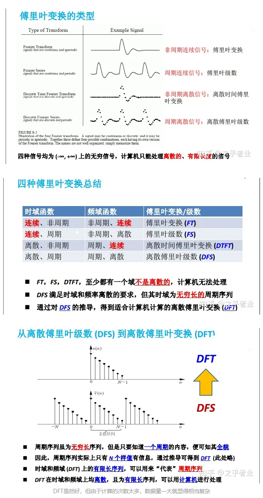
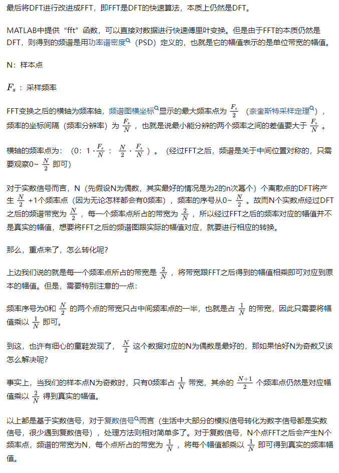
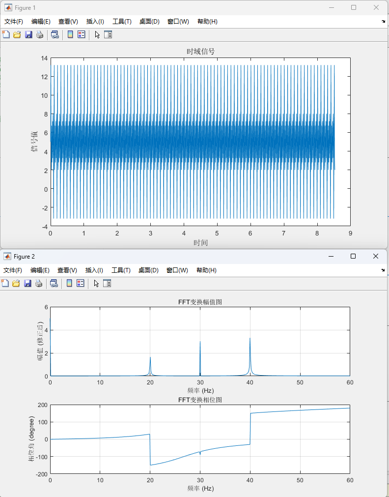
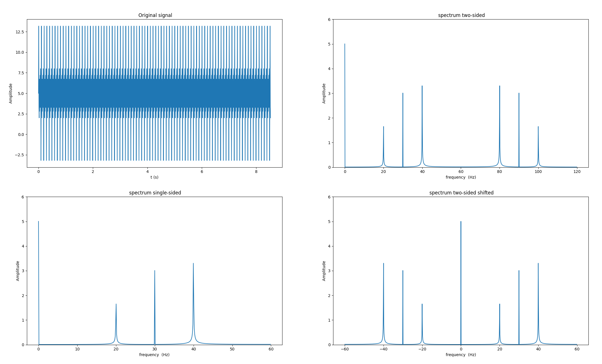
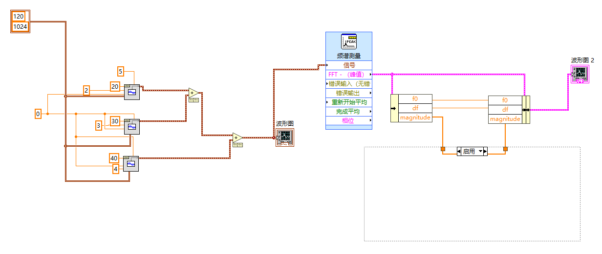
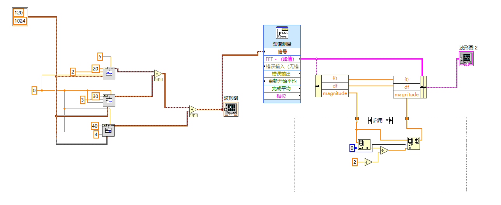

最近工作遇到需要通过对信号频域分析进而确认采样杂波扰动的滤波方案，在此记录一下快速傅里叶变换的几种实现方式。
参考资料
傅里叶变换基础总结
用python实现FFT，绘制频谱图
频谱分析-FFT之后的那些事情
傅里叶分析之掐死教程（完整版）
傅里叶变换基础


测试信号说明
从现实物理系统中采集的数据是信号的时域表示，但是在时域中很多信息都被隐藏了，当将采样信号变换到频域后，可以提取到很多有用的信息。
由于工作实际信号不便于展示，此处使用仿真生成波形的时域表示。仿真波形如下：
y = 5 + 2 sin(2 pi 20 t) + 3 sin(2 pi 30 t) + 4 sin(2 pi 40 t)
信号采集频率为120Hz(>2倍信号最高频率)
采样点为1024(采样点为2^n时，有利于计算机进行快速傅里叶计算)
matlab实现
1
2
3
4
5
6
7
8
9
10
11
12
13
14
15
16
17
18
19
20
21
22
23
24
25
26
27
28
29
30
31
32
33
34
35
36
37
38
39
40
41
42
43
44
45
46
47
48
49
50
51
| clear;clc;
Fs=120; % 采样频率 120 Hz, 大于两倍的最高频率
T=1/Fs; % 采样间隔
N=1024; % 采样点数
t=(0:1:N-1)*T; % 时间序列
t=t'; % 时间序列转置
% time-domain signal
y = 5 ... % 直流分量
+ (2)*sin(2*pi*20*t) ... % 20 Hz
+ (3)*sin(2*pi*30*(t)) ... % 30 Hz
+ (4)*sin(2*pi*40*(t)); % 40 Hz
%% 绘制时域信号
figure
plot(t,y)
xlabel('时间')
ylabel('信号值')
title('时域信号')
%% fft变换
Y=fft(y); % Y为fft变换结果，复数向量
Y=Y(1:N/2+1); % 只看变换结果的一半即可
A=abs(Y); % 复数的幅值（模）
f=(0:1:N/2)*Fs/N; % 生成频率范围
f=f'; % 转置成列向量
%% 幅值修正
A_adj=zeros(N/2+1,1);
A_adj(1)=A(1)/N; % 频率为0的位置除以N
A_adj(end)=A(end)/N; % 频率为Fs/2的位置也除以N
A_adj(2:end-1)=2*A(2:end-1)/N; %其余频率点乘以2/N
%% 绘制频率幅值图
figure
subplot(2,1,1)
plot(f,A_adj)
xlabel('频率 (Hz)')
ylabel('幅值 (修正后)')
title('FFT变换幅值图')
grid on
%% 绘制频谱相位图
subplot(2,1,2)
phase_angle=angle(Y); % angle函数的返回结果为弧度
phase_angle=rad2deg(phase_angle);%将弧度转化为度
plot(f,phase_angle)
xlabel('频率 (Hz)')
ylabel('相位角 (degree)')
title('FFT变换相位图')
grid on
|

python实现
1
2
3
4
5
6
7
8
9
10
11
12
13
14
15
16
17
18
19
20
21
22
23
24
25
26
27
28
29
30
31
32
33
34
35
36
37
38
39
40
41
42
43
44
45
46
47
48
49
50
51
52
53
54
55
56
57
58
59
60
61
62
63
| import numpy as np
from scipy.fftpack import fft,fftshift
import matplotlib.pyplot as plt
N = 1024
sample_freq=120
sample_interval=1/sample_freq
signal_len=N*sample_interval
t=np.arange(0,signal_len,sample_interval)
signal = 5 + 2 * np.sin(2 * np.pi * 20 * t) + 3 * np.sin(2 * np.pi * 30 * t) + 4 * np.sin(2 * np.pi * 40 * t)
fft_data = fft(signal)
fft_amp0 = np.array(np.abs(fft_data)/N*2)
fft_amp0[0]=0.5*fft_amp0[0]
N_2 = int(N/2)
fft_amp1 = fft_amp0[0:N_2]
fft_amp0_shift = fftshift(fft_amp0)
list0 = np.array(range(0, N))
list1 = np.array(range(0, int(N/2)))
list0_shift = np.array(range(0, N))
freq0 = sample_freq*list0/N
freq1 = sample_freq*list1/N
freq0_shift=sample_freq*list0_shift/N-sample_freq/2
plt.figure()
plt.subplot(221)
plt.plot(t, signal)
plt.title(' Original signal')
plt.xlabel('t (s)')
plt.ylabel(' Amplitude ')
plt.subplot(222)
plt.plot(freq0, fft_amp0)
plt.title(' spectrum two-sided')
plt.ylim(0, 6)
plt.xlabel('frequency (Hz)')
plt.ylabel(' Amplitude ')
plt.subplot(223)
plt.plot(freq1, fft_amp1)
plt.title(' spectrum single-sided')
plt.ylim(0, 6)
plt.xlabel('frequency (Hz)')
plt.ylabel(' Amplitude ')
plt.subplot(224)
plt.plot(freq0_shift, fft_amp0_shift)
plt.title(' spectrum two-sided shifted')
plt.xlabel('frequency (Hz)')
plt.ylabel(' Amplitude ')
plt.ylim(0, 6)
plt.show()
|

LabVIEW实现


小提示：直接使用LabVIEW的频谱测量功能获得的直流分量被放大了√2倍，故需要对直流分量进行幅值修正，原因未知。
结果分析
概要
设定的原信号的频率分量分别有 直流量(0Hz，幅值为5)，20Hz (幅值为2)，30Hz(幅值为3)，40Hz(幅值为4)，采样点数N为1024，采样频率Fs为120Hz
计算可知, 频率分辨率为120/1024, 信号长度L=N/Fs = 1024/120
关于频谱泄露的考虑:
20Hz ，30Hz，40Hz 分量对应的周期为1/20(s),1/30(s),1/40(s),信号长度L = 1024/120 能被30Hz对应的周期(1/30)整除，因此，频谱图上30Hz对应的幅值都是准确的，但是信号长度L不能被20Hz和40Hz对应的周期整除，出现了频谱泄露，因此幅值则略有偏差。从图上也可以看到，20Hz和40Hz对应的峰的底部有一定的宽度。
保持其他输入不变，将采样点更改为1200，则可以看到20Hz,30Hz,40Hz的幅值也是准确的。
基于此，采集前别乱选采样率，要对采集的信号有一定的了解，确定大致感兴趣的频率段，频谱分析的频率范围是[0~Fs/2]，也就是采样率的一半是你频谱的极限。
别瞎选，以前就看过不懂采集时选了一个最大的采样率，结果得出来的频谱质量非常差。
如果您喜欢此博客或发现它对您有用，则欢迎对此发表评论。 也欢迎您共享此博客，以便更多人可以参与。 如果博客中使用的图像侵犯了您的版权，请与作者联系以将其删除。 谢谢 ！